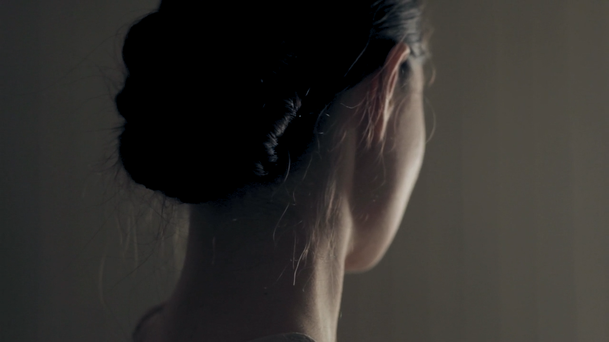
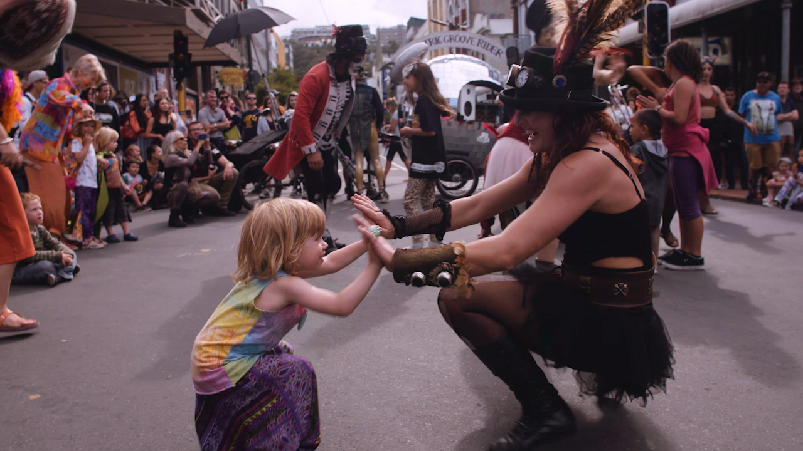
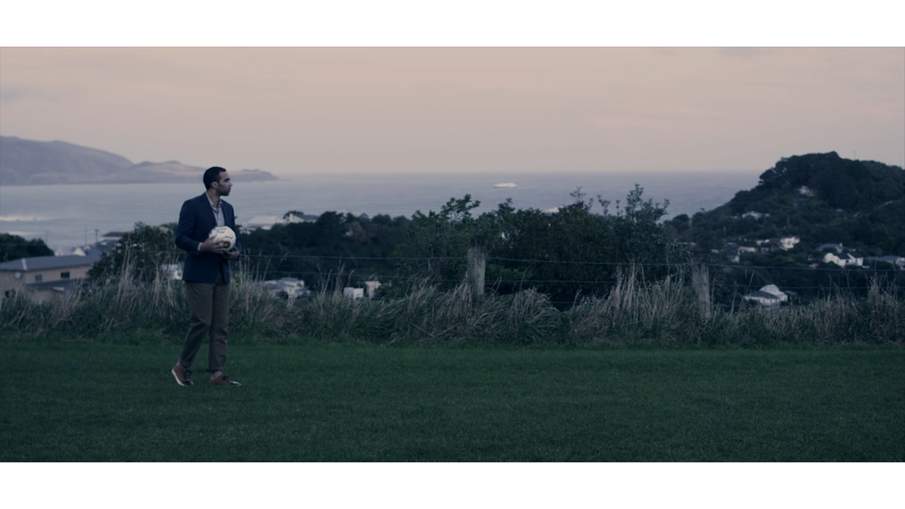
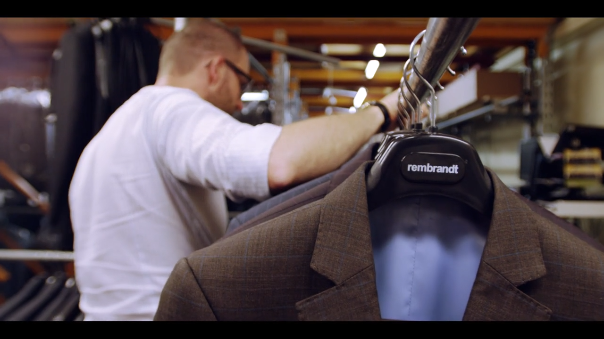
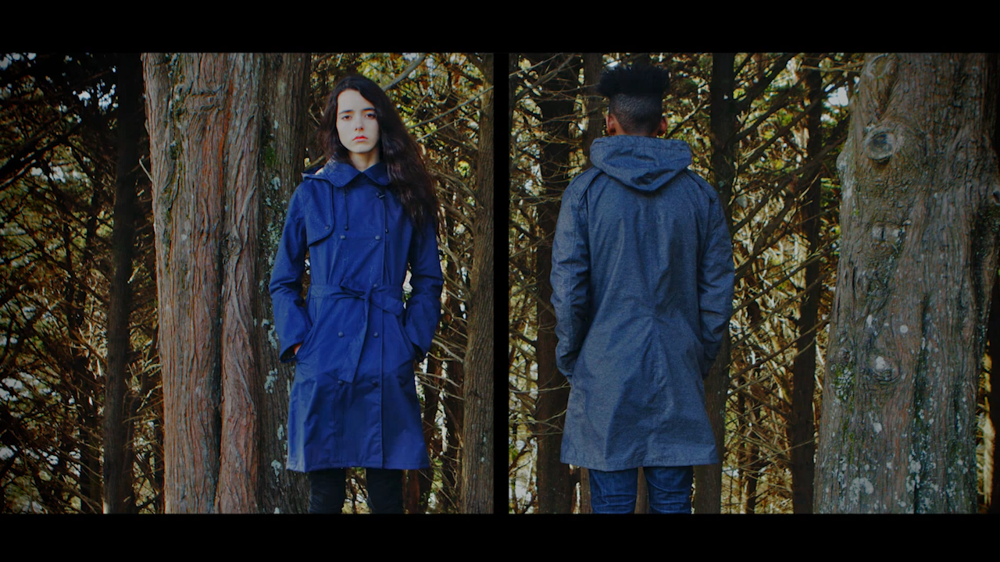
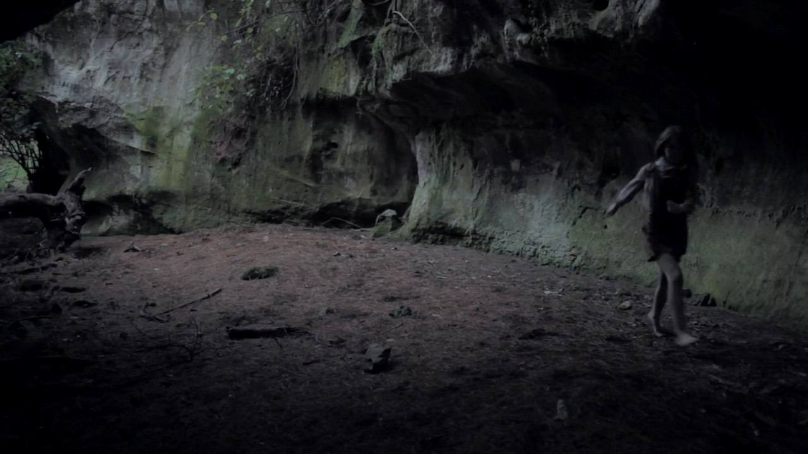

About
CV/Bio
Videos
Contact
Wellington based visual media supervisor. Director, DOP, Editor, Colourist, Photographer, Writer.
Contact brysonr@gmail.com
I'm available at my electronic mail address brysonr@gmail.com
Bryson Rooney is a visual media supervisor, currently relocating to New Orleans, Louisiana. He has spent the past 7 years in Wellington, New Zealand; first working in the film industry as a DOP and steadicam operator. He then helped build a successful video agency working on over 30 campaigns, serving as a director, cinematographer, and editor. Most recently he has been working as a documentary filmmaker for a large New Zealand education company, traveling around the country and handling all facets of the productions.
Email: brysonr@gmail.com
(Intensive 2 year film production program)
Advanced Diploma of Screen
(Film Major, French Minor, Graduated May 2007)
Bachelor of Fine Arts
Videographer/ Editor
Worked in Core Education’s digital media team creating mini documentaries for government agencies and private companies, with a focus on education. Responsible for camera operation, audio and lighting, with a good sense of storytelling and composition, independent and confident enough to be able to set up shots with managers, Principals, students, with only the client expert to assist (solo videographer rather than be directed in a small crew). Everyday use of Adobe Creative suit and Film Convert colour correction software.
Director/Editor/Producer/Cinematographer
Helped build a successful digital agency based in Wellington, NZ. Worked on over 30 web campaigns for a diverse client base, including Positively Wellington Tourism, Clemenger BBDO, Ministry of Social Development, Wellington Airport, Storypark, and Garage Project. Responsible and able to run entire projects; from conception/ideas, to producing and filming, to editing, sound mixing and colour grading, and to delivery.
Director. Founding member of Wellington recording studio. Converted warehouse space into premier recording/practice facility. (Clients- Trinity Roots, Beirut, Electric Wire Hustle, Hollie Smith, Junica, Family Cactus, Glass Vaults)
Assists professional audio engineers with recording setup & ProTools 10.
Organize recording/rehearsal schedule.
General day-to-day up-keep of the studio.
Web Administrator, Viedographer, Editor. Helped popular website film musical artists perform in Sydney.
Camera Operator.
Editor and Colour Grader.
Administrator.
Web Administrator, Producer, Editor. Helped online music channel interview New Zealand bands in Sydney, Australia.
Camera operator.
Edited the promotional videos.
Projects shot on:
STEADICAM trained
Trained Focus Puller
Info
Credits